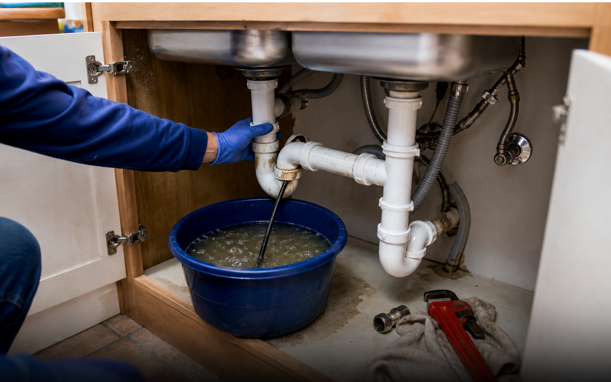

Location First
Room, fixture, floor level, cleanout access, and visible shutoff points can change the request category.


Explore plumbing request categories for leaks, drains, water heaters, sewer line symptoms, fixture work, and urgent situations before speaking with independent provider options.
Choose the closest category to learn what details to prepare before a provider conversation.
A better request starts with the details a provider needs: where the issue appears, how urgent it is, what has already been tried, and which parts of the property are affected.

PRoom, fixture, floor level, cleanout access, and visible shutoff points can change the request category.
Active water, sewage backup, unusable fixtures, and no hot water should be described differently.
Photos of valves, stains, tanks, drains, labels, and access points help providers understand the context faster.
Ask about inspection needs, pricing method, exclusions, warranty language, license, and insurance before hiring.